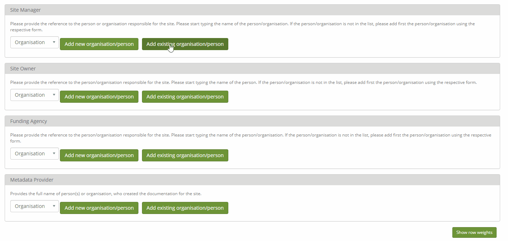
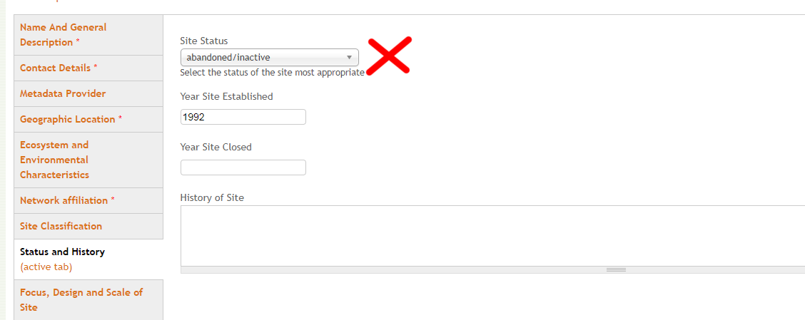

Adding or editing site information
Adding a site
Go to “Edit/Add Content” and then select “Site”
List of required fields
Site Name
Country (Site Location)
Coordinates
Is your site part of any network, project or research infrastructure?
if yes then the additional fields will appear which are also mandatory
Adding content inline
Click “Create person” or “Create organisation” while editing a site or a dataset. Please don’t create the same person over and over again. Use the search field to look for already existing entries.
How is the site title constructed?
It is constructed using the information stored in the fields “site name” and “country”, which represents the country where the site is located.
The syntax for the title is: [site name] - [country]
Uploading images
When entering site information you can upload images. Go to the tab “Name And General Description”. At the bottom of the page you will find the upload form. Select one or multiple images and upload them.
Adding a new network/project/RIs
New networks, RIs or projects can’t be added by users. Please contact us if you want your network/project/RI to be added.
Site Completeness Measure
DEIMS-SDR will provide you with a status bar indicating how complete your site record is. These are the fields that are currently used to calculate said completeness.
Name and Description
Site Name
General Site Description
Contact Details
Site Manager
Metadata provider
Geographic characteristics
Centroid Coordinates
Country
Elevation (From)
Elevation (To)
Size (in hectares)
Ecosystem and Environmental Characteristics
Air Temperature: Average Annual
Biome
Ecosystem Type
Precipitation Annual
Network Affiliation
Affiliation
Type, Design and Scale
Site Type (Spatial Design)
Status and History
Site Status
Year Established
Focus, Design and Scale of Site
Observed properties
Scale of Observation
Design of Observation
Scale of Experiments
Design of Experiments
Operation
Accessible All Year
Permanent Operation
Equipment
Permanent Power Supply
Highly recommended, yet not mandatory
Short name
Site Boundaries
GEO-BON Biome
It is nevertheless recommended to provide more than the listed information
Setting a site to inactive
Set the field “site status” to “abandoned/inactive”. A new field will appear where you can indicate when the site closed down. As soon as you set a site to inactive, it will be excluded from all search results and maps.
Editing the accreditation status
Editing the accreditation status can only be done by national network managers
Please contact us personally regarding any kind of network accreditation.
If you encounter any problems or have questions please contact us.